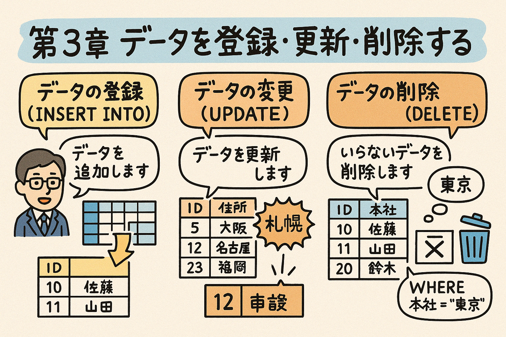

この第3章では、PostgreSQLにおけるデータの操作方法を学習します。データの登録（INSERT）、更新（UPDATE）、削除（DELETE）の基本的な構文と使い方を理解し、WHERE句を使って操作対象を絞り込む方法も学びます。
データベースは単にデータを保存するだけでなく、データを自由に操作できることが重要です。この章では、データを操作するための基本的なSQLコマンド（INSERT、UPDATE、DELETE）について学びます。これらのコマンドはデータベース管理の根幹をなす重要な操作です。
INSERT文は、テーブルに新しい行（レコード）を追加するためのSQLコマンドです。基本的な構文は次のとおりです：
INSERT INTO テーブル名 (列1, 列2, ...) VALUES (値1, 値2, ...);
例えば、次のようなcustomersテーブルがあるとします：
| id | name | phone | address |
|---|
このテーブルに新しい顧客データを追加するには：
INSERT INTO customers (name, email, phone, address)
VALUES ('山田太郎', 'yamada@example.com', '03-1234-5678', '東京都渋谷区1-2-3');
実行後のテーブル：
| id | name | phone | address | |
|---|---|---|---|---|
| 1 | 山田太郎 | yamada@example.com | 03-1234-5678 | 東京都渋谷区1-2-3 |
複数の行を一度に挿入するには、VALUES句を複数指定します：
INSERT INTO customers (name, email, phone, address)
VALUES
('佐藤花子', 'sato@example.com', '03-2345-6789', '東京都新宿区4-5-6'),
('鈴木一郎', 'suzuki@example.com', '03-3456-7890', '東京都池袋区7-8-9'),
('田中実', 'tanaka@example.com', '03-4567-8901', '東京都品川区10-11-12');
実行後のテーブル：
| id | name | phone | address | |
|---|---|---|---|---|
| 1 | 山田太郎 | yamada@example.com | 03-1234-5678 | 東京都渋谷区1-2-3 |
| 2 | 佐藤花子 | sato@example.com | 03-2345-6789 | 東京都新宿区4-5-6 |
| 3 | 鈴木一郎 | suzuki@example.com | 03-3456-7890 | 東京都池袋区7-8-9 |
| 4 | 田中実 | tanaka@example.com | 03-4567-8901 | 東京都品川区10-11-12 |
すべての列に値を挿入する場合は、列名を省略できます：
INSERT INTO products VALUES (1, 'ノートパソコン', 150000, 10, '2023-04-01');
列名を省略する場合は、テーブル定義の列順序と完全に一致するように値を指定する必要があります。可読性と保守性のため、できるだけ列名は明示的に指定することをお勧めします。
DEFAULT制約が設定されている列や自動採番される列については、明示的に「DEFAULT」キーワードを使用するか、列リストから省略できます：
-- DEFAULTキーワードを使用
INSERT INTO products (product_id, name, price, stock, created_at)
VALUES (DEFAULT, 'ワイヤレスマウス', 5000, 20, CURRENT_TIMESTAMP);
-- 自動採番列を省略
INSERT INTO products (name, price, stock, created_at)
VALUES ('ワイヤレスマウス', 5000, 20, CURRENT_TIMESTAMP);
以下のテーブル定義に基づいて、INSERT文を完成させてください。
CREATE TABLE products (
product_id SERIAL PRIMARY KEY,
name VARCHAR(100) NOT NULL,
price INTEGER NOT NULL,
category VARCHAR(50),
stock INTEGER DEFAULT 0
);
UPDATE文は、テーブル内の既存のデータを更新するためのSQLコマンドです。基本的な構文は次のとおりです：
UPDATE テーブル名 SET 列1 = 値1, 列2 = 値2, ... WHERE 条件;
例えば、customersテーブルの特定の顧客の電話番号とアドレスを更新するには：
UPDATE customers
SET phone = '03-9876-5432', address = '東京都目黒区13-14-15'
WHERE id = 2;
実行後のテーブル：
| id | name | phone | address | |
|---|---|---|---|---|
| 1 | 山田太郎 | yamada@example.com | 03-1234-5678 | 東京都渋谷区1-2-3 |
| 2 | 佐藤花子 | sato@example.com | 03-9876-5432 | 東京都目黒区13-14-15 |
| 3 | 鈴木一郎 | suzuki@example.com | 03-3456-7890 | 東京都池袋区7-8-9 |
| 4 | 田中実 | tanaka@example.com | 03-4567-8901 | 東京都品川区10-11-12 |
WHERE句を省略すると、テーブル内のすべての行が更新されます。これは通常、意図しない結果を引き起こす可能性があるため、十分に注意してください。
列の値は、現在の値を基にした計算式を使って更新することもできます：
-- 商品の在庫を5増やす
UPDATE products SET stock = stock + 5 WHERE product_id = 1;
-- 商品の価格を10%値上げする
UPDATE products SET price = price * 1.1 WHERE category = 'アクセサリー';
複数の条件を組み合わせて更新対象を指定することができます：
UPDATE products
SET price = price * 0.9, stock = stock + 10
WHERE category = 'オーディオ' AND price > 10000;
CASE式を使うと、条件に応じて異なる更新値を設定できます：
UPDATE products
SET price =
CASE
WHEN stock > 20 THEN price * 0.9 -- 在庫が多い場合は10%値下げ
WHEN stock < 5 THEN price * 1.1 -- 在庫が少ない場合は10%値上げ
ELSE price -- それ以外は変更なし
END;
以下のproductsテーブルに対するUPDATE文を作成してください：
| product_id | name | price | category | stock |
|---|---|---|---|---|
| 1 | USB充電器 | 2500 | アクセサリー | 15 |
| 2 | Bluetoothヘッドフォン | 12000 | オーディオ | 0 |
| 3 | スマートウォッチ | 25000 | ウェアラブル | 8 |
| 4 | ポータブルSSD | 18000 | ストレージ | 12 |
DELETE文は、テーブルから行（レコード）を削除するためのSQLコマンドです。基本的な構文は次のとおりです：
DELETE FROM テーブル名 WHERE 条件;
例えば、customersテーブルから特定のIDを持つ顧客を削除するには：
DELETE FROM customers WHERE id = 3;
実行後のテーブル：
| id | name | phone | address | |
|---|---|---|---|---|
| 1 | 山田太郎 | yamada@example.com | 03-1234-5678 | 東京都渋谷区1-2-3 |
| 2 | 佐藤花子 | sato@example.com | 03-9876-5432 | 東京都目黒区13-14-15 |
| 4 | 田中実 | tanaka@example.com | 03-4567-8901 | 東京都品川区10-11-12 |
DELETE文にWHERE句を付けないと、テーブル内のすべての行が削除されます。この操作は元に戻せないため、特に本番環境では細心の注意が必要です。
本番環境でDELETE操作を行う前には、以下の対策を検討してください：
複数の条件を組み合わせて削除対象を指定することができます：
-- カテゴリが「アクセサリー」で在庫が0の商品を削除
DELETE FROM products WHERE category = 'アクセサリー' AND stock = 0;
重要なデータを削除する場合は、トランザクションを使用することで、確認後にコミットまたはロールバックができます：
-- トランザクション開始
BEGIN;
-- 削除対象を確認
SELECT * FROM products WHERE price < 1000;
-- 削除実行
DELETE FROM products WHERE price < 1000;
-- 削除結果の確認
SELECT * FROM products;
-- 問題なければコミット、問題があればロールバック
COMMIT;
-- または
-- ROLLBACK;
以下のproductsテーブルに対するDELETE文を作成してください：
| product_id | name | price | category | stock |
|---|---|---|---|---|
| 1 | USB充電器 | 2500 | アクセサリー | 15 |
| 2 | Bluetoothヘッドフォン | 12000 | オーディオ | 10 |
| 3 | スマートウォッチ | 25000 | ウェアラブル | 8 |
| 4 | ポータブルSSD | 18000 | ストレージ | 12 |
| 5 | マウスパッド | 800 | アクセサリー | 0 |
データベース設計において、データの削除方法には以下の2つのアプローチがあります：
例（論理削除の場合）：
-- 論理削除用のフラグ列追加
ALTER TABLE customers ADD COLUMN is_deleted BOOLEAN DEFAULT FALSE;
-- 論理削除の実行（物理的には削除せず、フラグを更新）
UPDATE customers SET is_deleted = TRUE WHERE id = 4;
-- 論理削除されていないデータのみを検索
SELECT * FROM customers WHERE is_deleted = FALSE;
業務システムでは、データの履歴を保持するために論理削除が広く使用されています。
WHERE句は、INSERT、UPDATE、DELETEの各コマンドで、操作対象となる行を絞り込むために使用します。適切なWHERE句を使用することで、必要なデータだけを正確に操作することができます。
WHERE句では、様々な条件式を使用してデータを絞り込むことができます：
-- 等価比較（=）
WHERE id = 5
-- 不等価比較（<>または!=）
WHERE category <> 'アクセサリー'
-- 大小比較（>、<、>=、<=）
WHERE price > 10000
WHERE stock <= 5
-- 複数条件（AND、OR）
WHERE category = 'オーディオ' AND price < 15000
WHERE stock = 0 OR price < 1000
-- 範囲指定（BETWEEN）
WHERE price BETWEEN 5000 AND 10000
-- リスト内の値（IN）
WHERE category IN ('アクセサリー', 'オーディオ', 'ストレージ')
-- パターンマッチング（LIKE）
WHERE name LIKE 'USB%' -- 'USB'で始まる名前
WHERE name LIKE '%フォン' -- 'フォン'で終わる名前
WHERE name LIKE '%イヤ%' -- '以外'を含む名前
-- NULL値の確認
WHERE email IS NULL
WHERE phone IS NOT NULL
図3.1: WHERE句で使用できる主な条件演算子
括弧を使うことで、複雑な条件を明確に指定することができます：
-- カテゴリが「アクセサリー」で在庫がある、または価格が5000円未満の商品を更新
UPDATE products
SET price = price * 0.9
WHERE (category = 'アクセサリー' AND stock > 0) OR price < 5000;
PostgreSQLでは、LIKEを使った部分一致検索でワイルドカードを使用できます：
| パターン | 意味 | 例 |
|---|---|---|
| % | 0文字以上の任意の文字列 | LIKE '%フォン%' → 「ヘッドフォン」「マイクロフォン」など |
| _ | 任意の1文字 | LIKE 'USB_' → 'USB1'、'USB2'など |
PostgreSQLでは、より高度な検索のために正規表現（POSIX正規表現）を使用することもできます：
-- 正規表現による検索（~演算子）
-- 数字で終わる商品名を検索
SELECT * FROM products WHERE name ~ '[0-9]$';
-- 大文字小文字を区別しない検索（~*演算子）
SELECT * FROM products WHERE name ~* '^usb';
日付や時刻のフィールドに対しても、WHERE句を使用して条件を指定できます：
-- 特定の日付以降に登録された商品
UPDATE products
SET price = price * 1.05
WHERE created_at >= '2023-01-01';
-- 先月登録された商品
DELETE FROM temp_products
WHERE created_at BETWEEN
(CURRENT_DATE - INTERVAL '1 month')::date
AND CURRENT_DATE;
以下のordersテーブルと対応するSQL文を考えてください：
| order_id | customer_id | order_date | total_amount | status |
|---|---|---|---|---|
| 1 | 101 | 2023-03-15 | 12500 | 発送済 |
| 2 | 102 | 2023-03-18 | 35000 | 準備中 |
| 3 | 101 | 2023-03-22 | 8000 | 発送済 |
| 4 | 103 | 2023-03-25 | 42000 | 支払待ち |
| 5 | 104 | 2023-03-28 | 15000 | キャンセル |
これまで学んだINSERT、UPDATE、DELETEを組み合わせた総合的な演習に取り組みましょう。以下のテーブル定義を使用します：
CREATE TABLE customers (
customer_id SERIAL PRIMARY KEY,
name VARCHAR(100) NOT NULL,
email VARCHAR(100) UNIQUE,
phone VARCHAR(20),
address TEXT,
registration_date DATE DEFAULT CURRENT_DATE,
membership_type VARCHAR(20) DEFAULT 'standard',
is_active BOOLEAN DEFAULT TRUE
);
以下の一連の操作を行うSQLスクリプトを作成してください：
トランザクションを使用して、これらの操作を安全に行ってください。
以下は、演習3.5.1の解答例です：
-- トランザクション開始
BEGIN;
-- 1. 3人の新規顧客データを登録
INSERT INTO customers (name, email, phone, address, membership_type)
VALUES
('山本和子', 'yamamoto@example.com', '03-1111-2222', '東京都中野区1-1-1', 'プレミアム'),
('井上誠', 'inoue@example.com', '03-3333-4444', '東京都杉並区2-2-2', 'standard'),
('加藤裕子', 'kato@example.com', '03-5555-6666', '東京都世田谷区3-3-3', 'standard');
-- 登録結果確認
SELECT * FROM customers;
-- 2. 山本和子の情報を更新
UPDATE customers
SET phone = '03-7777-8888', address = '東京都新宿区4-4-4'
WHERE name = '山本和子';
-- 更新結果確認
SELECT * FROM customers WHERE name = '山本和子';
-- 3. 標準会員のうち、登録日が30日以上前の顧客を「ゴールド」会員にアップグレード
UPDATE customers
SET membership_type = 'ゴールド'
WHERE membership_type = 'standard'
AND registration_date <= CURRENT_DATE - INTERVAL '30 days';
-- 更新結果確認
SELECT * FROM customers;
-- 4. 井上誠の顧客情報を論理削除
UPDATE customers
SET is_active = FALSE
WHERE name = '井上誠';
-- 削除結果確認
SELECT * FROM customers;
-- 5. アクティブな顧客のみ取得
SELECT * FROM customers WHERE is_active = TRUE;
-- トランザクションのコミット
COMMIT;
月次レポート作成のために、以下のテーブルを操作するSQLスクリプトを作成してください：
-- sales_dataテーブル（販売データ）
CREATE TABLE sales_data (
id SERIAL PRIMARY KEY,
product_name VARCHAR(100),
category VARCHAR(50),
sale_date DATE,
quantity INT,
unit_price DECIMAL(10, 2),
total_amount DECIMAL(10, 2),
region VARCHAR(50)
);
-- monthly_reportsテーブル（月次レポート）
CREATE TABLE monthly_reports (
report_id SERIAL PRIMARY KEY,
year INT,
month INT,
category VARCHAR(50),
region VARCHAR(50),
total_sales DECIMAL(10, 2),
total_quantity INT,
average_price DECIMAL(10, 2),
created_at TIMESTAMP DEFAULT CURRENT_TIMESTAMP
);
以下の操作を行ってください：
以下の問題に答えて、第3章の内容の理解度を確認しましょう。
問題1: 次のうち、新しい商品データをproductsテーブルに追加する正しいSQL文はどれですか？
問題2: WHERE句を省略したDELETE文の結果として正しいものはどれですか？
問題3: 次の中で、UPDATE文の構文として正しいものはどれですか？
問題4: 複数の行を一度に挿入するために、INSERTコマンドで正しい構文はどれですか？
問題5: 「在庫が0または価格が1000円未満」の商品を削除するための正しいSQL文はどれですか？
この章では、データの操作に関する基本的なSQLコマンド（INSERT、UPDATE、DELETE）と、WHERE句を使った条件指定について学びました。次の章では、より高度なデータ取得方法として、JOINやサブクエリなどについて学んでいきます。
練習問題と演習を繰り返し行い、この章で学んだ内容をしっかりと身につけましょう。また、実際のデータベースで試してみることで、より理解が深まります。